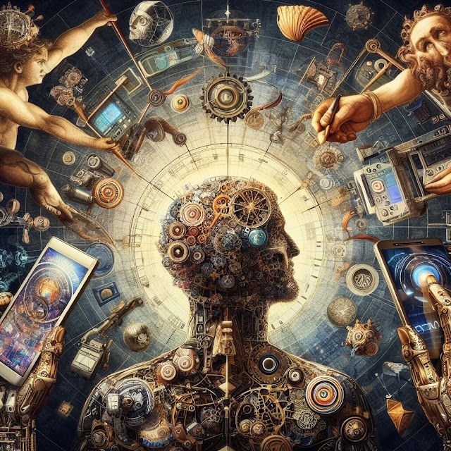

Imagenes digitales
¿Cómo se crean las imágenes digitales?

La fotografía digital es una variación de la fotografía química tradicional en la que se utilizan dispositivos dotados de una serie de fotodetectores electrónicos en lugar de película fotosensible.
Dicho de otra forma, la fotografía digital es aquella en la que el resultado son imágenes digitales, no analógicas.
Las imágenes digitales son una representación numérica de una escena en dos dimensiones. Esa representación está hecha, normalmente, en código binario.
El código binario es un sistema que utiliza dos números para representar imágenes, textos u órdenes de una computadora. Estos números son el 0 y el 1 y se conocen con el nombre de Bit. Podemos encontrar más información acerca de este código en la página que dedicamos al Sistema Binario en nuestra sección Mundo Digital.
Un píxel es la unidad mínima de una imagen digital de mapa de bits. Estos están dispuestos sobre una matriz con filas y columnas y almacenan la información de luminosidad o tono de la escena. A mayor número de filas y columnas, mayor número de píxeles y en consecuencia, mayor detalle de imagen.
Las imágenes en mapa de bits se definen por su anchura y altura en píxeles y por su profundidad de color.
La Profundidad de Color hace referencia a la cantidad de bits (1 y 0) que hacen falta para que un color quede representado fielmente en un píxel.
Pero no todas las imágenes digitales son en mapa de bits. También existen las imágenes vectoriales. Este tipo de imagen es el resultado de una descripción geométrica (vectores) de la realidad.
Checa este link, te dara más informacón sobre la creacón de las imágenes digitales
Fuente consultada:
¿Cómo se crea una imagen digital? (s. f.). https://www.fotonostra.com/fotografia/imagenesdigitales.htm#google_vignette